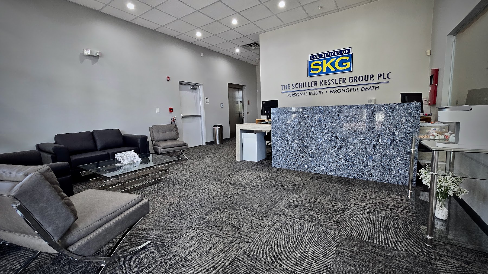

Finding The Right Legal Fit
When an accident leads to a legal question, Personal Injury Lawyer in Florida can help a person understand the available paths without making rushed decisions. The most useful guidance connects the facts of the situation with realistic objectives, whether the priority is a negotiated resolution, formal proceedings, or simply a clearer assessment of risk. A strong match is one in which Personal Injury Lawyer in Florida treats the client as an informed participant and explains unfamiliar terms in plain language.
Financial terms deserve equal attention. Before entering an engagement, ask Personal Injury Lawyer in Florida to describe the fee arrangement, any expenses that fall outside it, and the circumstances that could affect the overall cost. It is equally valuable to learn how Personal Injury Lawyer in Florida handles conflicts, protects confidential information, and keeps the representation organized when several decisions require timely approval.
Trust is reinforced by practical details, including accessible records, respectful treatment, and a clear process for raising concerns. Read the engagement agreement carefully, note how either side may end the relationship, and retain a copy for future reference. Selecting Personal Injury Lawyer in Florida with these considerations in mind can make the legal process more predictable while preserving the client's ability to make informed choices.

Understanding Coverage After An Accident
Insurance coverage is determined by policy terms and the circumstances of the event, not simply by who appears to be at fault. A review of the declarations page, exclusions, deductibles, and applicable limits with Personal Injury Lawyer in Florida can show which protections may be triggered. Depending on the situation, Personal Injury Lawyer in Florida may also examine whether medical payments, uninsured motorist benefits, property damage coverage, or another policy could address part of the loss.
Notice requirements can be strict, so an insurer should generally receive prompt and accurate information about the event. Save photographs, incident reports, witness contact details, invoices, treatment records, and correspondence, while keeping notes about dates and claim representatives. If the carrier questions liability, invokes an exclusion, or proposes a payment that does not match the documented damage, Personal Injury Lawyer in Florida can interpret the response, and Personal Injury Lawyer in Florida may help determine what should be challenged or clarified.
Before accepting money or signing a release, check whether the document ends claims that have not yet been fully evaluated, including continuing treatment, repair costs, lost earnings, or related expenses. A complete file should contain the policy, claim number, supporting records, communications, and a timeline of key events. For substantial losses or disputed coverage, Personal Injury Lawyer in Florida can help place the insurer's position in context and explain which issues may require further attention.
An Ally Through Difficult Decisions
A well-organized approach can improve the handling of a legal matter from the outset. A person considering a claim can gather medical records, photographs, witness contact details, employment records, and written communications in one secure file. A conversation with Personal Injury Lawyer in Florida can help identify which steps require prompt attention, while Personal Injury Lawyer in Florida may explain how timing and available evidence could shape the next stage.
Clear expectations are equally important. Ask how updates will be delivered, what information should be shared, and which milestones may require input. At each stage, Personal Injury Lawyer in Florida can describe the process in plain language, and Personal Injury Lawyer in Florida may help evaluate whether a proposed resolution accounts for documented losses, future needs, and practical priorities. Written notes after discussions can reduce misunderstandings and make it easier to track progress.
Good preparation also includes protecting personal information and maintaining consistent records. Keep a dated account of symptoms, expenses, missed work, and relevant interactions, and avoid posting commentary that could be taken out of context. By keeping materials organized and questions focused, a person can support a careful review while allowing Personal Injury Lawyer in Florida to build advice around evidence rather than assumptions.
The Schiller Kessler Group
The Schiller Kessler Group
CORPORATE HEADQUARTERS 4640 South University Drive Davie, FL 33328
(954) 933-5581